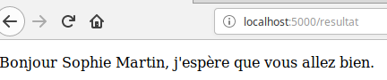

Activité
Comme déjà évoqué dans la partie consacrée au modèle client-serveur, un serveur web (aussi appelé serveur HTTP) permet de répondre à une requête HTTP effectuée par un client (très souvent un navigateur web). Nous allons travailler avec le serveur web qui est installé sur votre ordinateur. Nous allons donc avoir une configuration un peu particulière puisque le client et le serveur vont se trouver sur la même machine. Cette configuration est classique lorsque l'on désire effectuer de simples tests. Nous aurons donc 2 logiciels sur le même ordinateur : le client (navigateur web) et le serveur (serveur web), ces 2 logiciels vont communiquer en utilisant le protocole HTTP. Il existe de nombreux serveurs web, mais le plus utilisé se nomme Apache. Nous n'allons pas utiliser Apache, car nous allons travailler avec le framework Python Flask. Ce framework va nous permettre de générer des pages web côté serveur, il possède son propre serveur web. À noter qu'il est aussi possible d'utiliser d'autres langages côté serveur : Java, C# et surtout PHP (pour ceux qui sont intéressés, vous trouverez ici l'équivalent de la présente activité en PHP à la place de Python).
Nous allons commencer par un cas très simple où le serveur va renvoyer au client une simple page HTML statique (ne pas hésiter à consulter la partie consacrée au modèle client-serveur pour plus de précision sur ce terme "statique").
activité 28.1
Dans votre répertoire de travail, créez un répertoire nommé "flask".
activité 28.2
À l'aide de Spyder, créez un fichier Python "views.py" (ce fichier devra être sauvegardé dans le répertoire "flask" précédemment créé). Saisissez le code suivant dans le fichier "views.py"
from flask import Flask
app = Flask(__name__)
@app.route('/')
def index():
return "<p>Tout fonctionne parfaitement</p>"
app.run(debug=True)
activité 28.3
Après avoir exécuté le programme ci-dessus, ouvrez votre navigateur web et tapez dans la barre d'adresse "localhost:5000".
Vous devriez voir la phrase "Tout fonctionne parfaitement" s'afficher dans votre navigateur.
Une petite explication s'impose à propos du "localhost:5000" : comme nous l'avons déjà dit, notre serveur et notre client se trouvent sur la même machine, avec le "localhost", on indique au navigateur que le serveur web se trouve sur le même ordinateur que lui (on parle de machine locale). Dans un cas normal, la barre d'adresse devrait être renseignée avec l'adresse du serveur web. Le "5000" indique le port, nous n'étudierons pas cet aspect des choses ici, vous devez juste savoir que le "5000" doit suivre le "localhost".
Stoppez l'exécution du programme dans Spyder.
Essayons de comprendre en détail ce qui s'est passé :
En exécutant le programme Python ci-dessus, le framework Flask a lancé un serveur web. Ce serveur web attend des requêtes HTTP sur le port 5000. En ouvrant un navigateur web et en tapant "localhost:5000", nous faisons une requête HTTP, le serveur web fourni avec Flask répond à cette requête HTTP en envoyant une page web contenant uniquement "
Tout fonctionne parfaitement
".Reprenons le programme Python ligne par ligne :
from flask import Flask
Nous importons la bibliothèque Flask
app = Flask(__name__)
Nous créons un objet app : cette ligne est systématique nécessaire.
@app.route('/')
Nous utilisons ici un décorateur (cette notion de décorateur ne sera pas traitée en NSI). Vous devez juste comprendre la fonction qui suit ce décorateur ("index"), sera exécutée dans le cas où le serveur web recevra une requête HTTP avec une URL correspondant à la racine du site ('/'), c'est à dire, dans notre exemple, le cas où on saisie dans la barre d'adresse "localhost:5000/" (ou simplement "localhost:5000") Nous verrons ci-dessous un exemple avec une URL autre que '/'.
def index():
return "<p>Tout fonctionne parfaitement</p>"
En cas de requête HTTP d'un client avec l'URL "/", le serveur renvoie vers le client une page HTML contenant uniquement la ligne "\
Tout fonctionne parfaitement\
".app.run(debug=True)
Cette ligne permet de lancer le serveur, elle sera systématiquement présente.
activité 28.4
À l'aide de Spyder, modifiez le fichier Python "views.py" :
from flask import Flask
app = Flask(__name__)
@app.route('/')
def index():
return "<p>Tout fonctionne parfaitement</p>"
@app.route('/about')
def about():
return "<p>Une autre page</p>"
app.run(debug=True)
Après avoir exécuté le programme ci-dessus, saisissez "localhost:5000/about" dans la barre d'adresse de votre navigateur.
Comme vous pouvez le constater, le serveur nous renvoie dans ce cas une autre page. Évidemment l'URL racine ("/") reste disponible, vous pouvez passer d'une page à l'autre en modifiant l'URL dans la barre d'adresse ("localhost:5000" ou "localhost:5000/about")
Écrire le code HTML qui devra être renvoyé au client dans le programme Python n'est pas très pratique, Flask propose une autre solution bien plus satisfaisante :
activité 28.5
Dans votre répertoire "Flask", créez un répertoire "templates". Dans ce répertoire templates, créez un fichier index.html. Saisissez le code HTML ci-dessous dans ce fichier index.html
<!doctype html>
<html lang="fr">
<head>
<meta charset="utf-8">
<title>Ma page</title>
</head>
<body>
<h1>Mon super site</h1>
<p>Tout fonctionne parfaitement</p>
</body>
</html>
activité 28.6
Modifiez le programme views.py comme suit :
from flask import Flask, render_template
app = Flask(__name__)
@app.route('/')
def index():
return render_template("index.html")
app.run(debug=True)
Relancez le programme Python et tapez "localhost:5000" dans la barre d'adresse de votre navigateur
Le serveur renvoie maintenant au client la page HTML correspondant au fichier "index.html" qui a été créé dans le répertoire "templates". Attention, les fichiers HTML devront systématiquement se trouver dans un répertoire nommé "templates".
N. B. le "debug=True" de la dernière ligne permet de modifier les fichiers HTML sans être obligé de redémarrer le programme "views.py".
Pour l'instant notre site est statique : la page reste identique, quelles que soient les actions des visiteurs. Flask permet de créer des pages dynamiques :
-
le client (le navigateur web) envoie une requête HTTP vers un serveur web
-
en fonction de la requête reçue et de différents paramètres, Flask "fabrique" une page HTML différente
-
le serveur web associé à Flask envoie la page nouvellement créée au client
-
une fois reçue, la page HTML est affichée dans le navigateur web
activité 28.7
Modifiez le fichier views.py comme suit :
from flask import Flask, render_template
import datetime
app = Flask(__name__)
@app.route('/')
def index():
date = datetime.datetime.now()
h = date.hour
m = date.minute
s = date.second
return render_template("index.html", heure = h, minute = m, seconde = s)
app.run(debug=True)
Dans le programme ci-dessous nous importons le module "datetime" afin de pouvoir déterminer la date et l'heure courante. Le
date = datetime.datetime.now()
nous permet de récupérer la date et l'heure courante
h = date.hour
m = date.minute
s = date.second
Après l'exécution des 3 lignes ci-dessus, les variables h, m et s contiennent l'heure courante.
La fonction "render_template"
return render_template("index.html", heure = h, minute = m, seconde = s)
contient 3 paramètres de plus par rapport à l'exemple du "À faire vous-même 6" : le paramètre "heure", le paramètre "minute" et le paramètre "seconde", nous allons retrouver ces 3 paramètres dans le fichier HTML.
activité 28.8
Modifiez le fichier "index.html" comme suit :
<!doctype html>
<html lang="fr">
<head>
<meta charset="utf-8">
<title>Utilisation de Flask</title>
</head>
<body>
<h1>Mon super site</h1>
<p>Le serveur fonctionne parfaitement, il est {{heure}} h {{minute}} minutes et {{seconde}} secondes</p>
</body>
</html>
Testez ces modifications en saisissant "localhost:5000" dans la barre de votre navigateur web.
Nous avons bien une page dynamique, puisqu'à chaque fois que vous actualisez la page dans votre navigateur, l'heure courante s'affiche : à chaque fois que vous actualisez la page, vous effectuez une nouvelle requête et en réponse à cette requête, le serveur envoie une nouvelle page HTML.
Attention, il est bien important de comprendre que la page HTML envoyée par le serveur au client ne contient plus les paramètres {{heure}}, {{minute}} et {{seconde}}. Au moment de créer la page, le serveur remplace ces paramètres par les valeurs passées en paramètres de la fonction "render_template" (s'il est 14 h 45 minutes et 31 secondes, le serveur remplacera "Le serveur fonctionne parfaitement, il est {{heure}} h {{minute}} minutes et {{seconde}} secondes" par "Le serveur fonctionne parfaitement, il est 15 h 45 minutes et 31 secondes").
Le fichier "index.html" ne contient donc pas du HTML (même si cela ressemble beaucoup à du HTML), car les paramètres {{heure}}, {{minute}} et {{seconde}} n'existent pas en HTML. Le fichier "index.html" contient en fait un langage de template nommé Jinja. Jinja ressemble beaucoup au HTML, mais il rajoute beaucoup de fonctionnalités par rapport au HTML (notamment les paramètres entourés d'une double accolade comme {{heure}}). Si vous utilisez Jinja seul (sans un framework comme Flask), les paramètres ne seront pas remplacés et votre navigateur affichera "Le serveur fonctionne parfaitement, il est {{heure}} h {{minute}} minutes et {{seconde}} secondes".
Nous allons maintenant nous intéresser à la gestion des formulaires.
activité 28.9
Modifiez le fichier "index.html" comme suit :
<!doctype html>
<html lang="fr">
<head>
<meta charset="utf-8">
<title>Le formulaire</title>
</head>
<body>
<form action="http://localhost:5000/resultat" method="post">
<label>Nom</label> : <input type="text" name="nom" />
<label>Prénom</label> : <input type="text" name="prenom" />
<input type="submit" value="Envoyer" />
</form>
</body>
</html>
et créez un fichier "resultat.html" (dans le répertoire "templates"), ce fichier devra contenir le code suivant :
<!doctype html>
<html lang="fr">
<head>
<meta charset="utf-8">
<title>Résultat</title>
</head>
<body>
<p>Bonjour {{prenom}} {{nom}}, j'espère que vous allez bien.</p>
</body>
</html>
activité 28.10
Modifiez le fichier views.py comme suit :
from flask import Flask, render_template, request
app = Flask(__name__)
@app.route('/')
def index():
return render_template('index.html')
@app.route('/resultat',methods = ['POST'])
def resultat():
result = request.form
n = result['nom']
p = result['prenom']
return render_template("resultat.html", nom=n, prenom=p)
app.run(debug=True)
Après avoir relancé "views.py", testez cet exemple en saisissant "localhost:5000" dans la barre d'adresse de votre navigateur web.
Si vous saisissez, par exemple, "Martin" et "Sophie" dans les champs "Nom" et "Prénom" du formulaire, vous devriez obtenir le résultat suivant après avoir appuyé sur le bouton "Envoyer" :

Reprenons un par un les événements qui nous ont amenés à ce résultat :
Nous effectuons une requête HTTP avec l'URL "/", le serveur génère une page web à partir du fichier "index.html", cette page, qui contient un formulaire (balise \